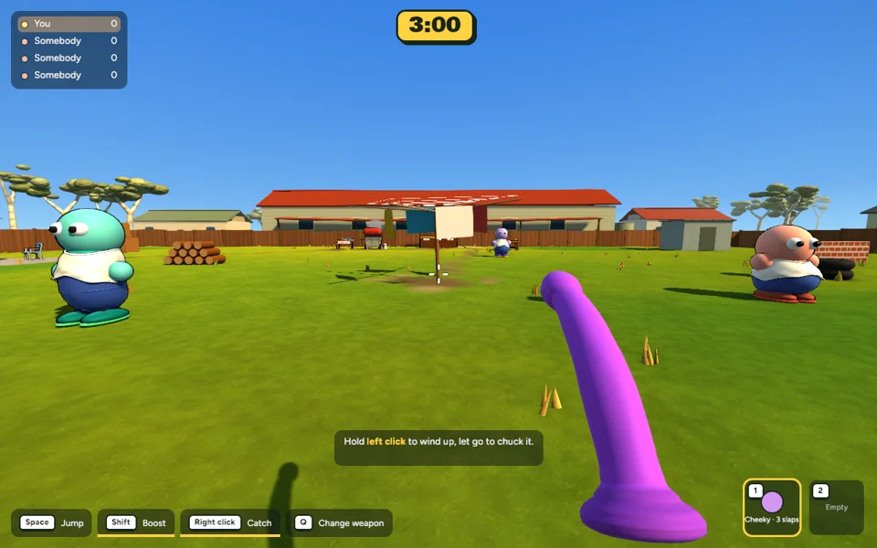
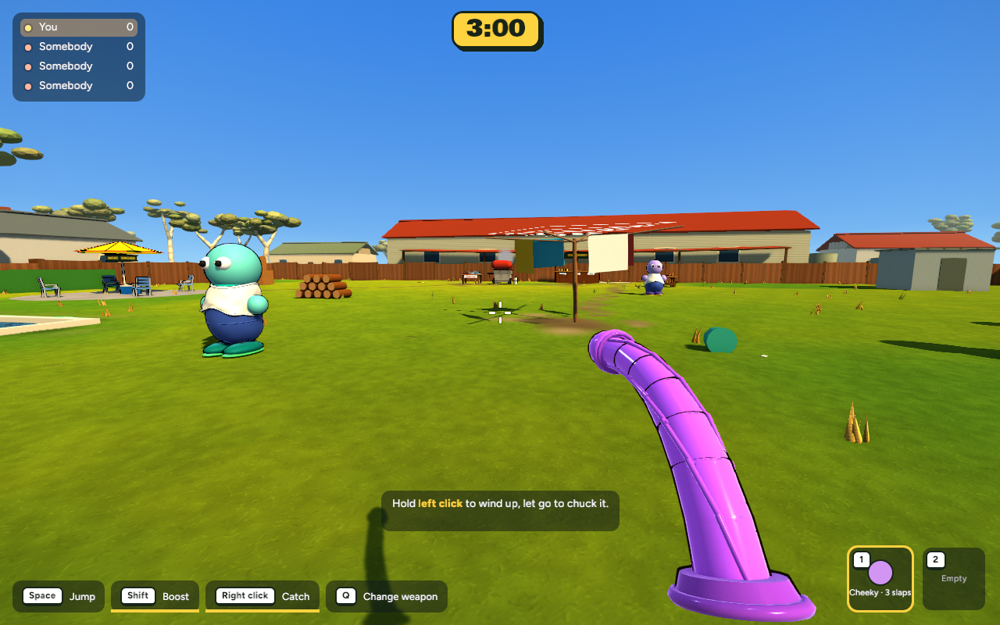
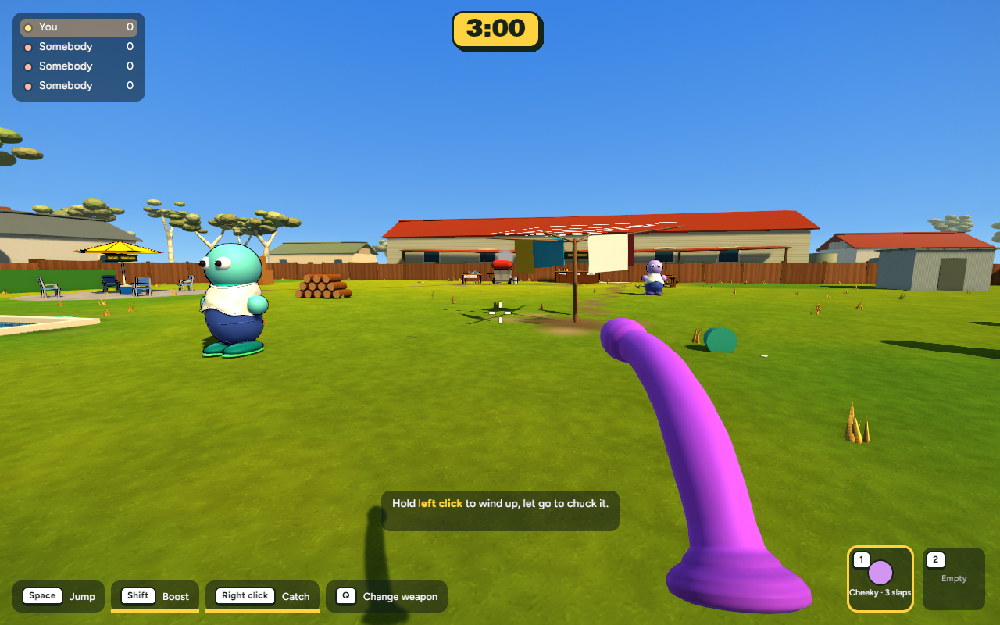
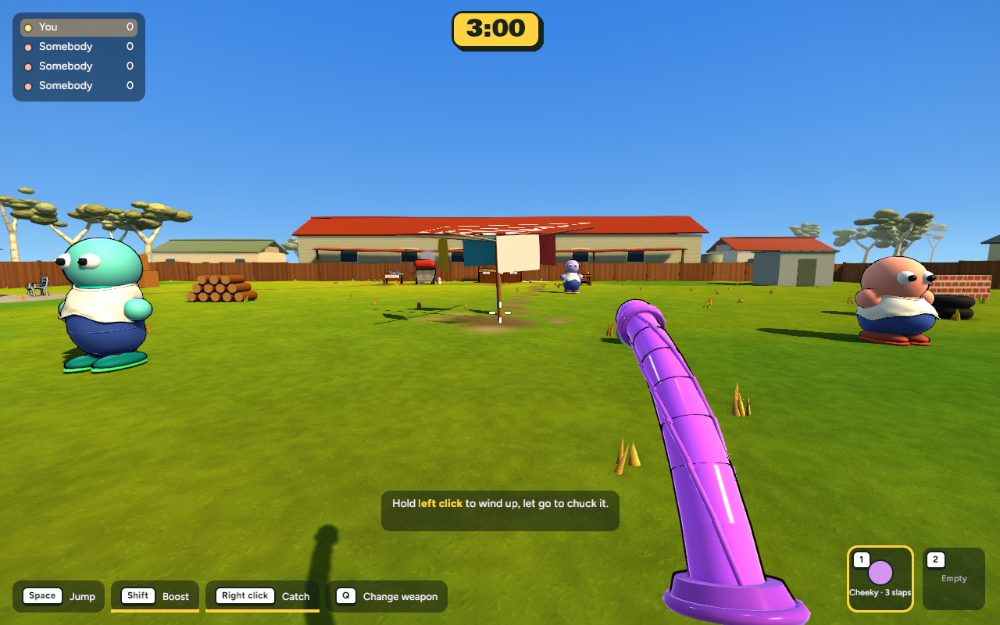
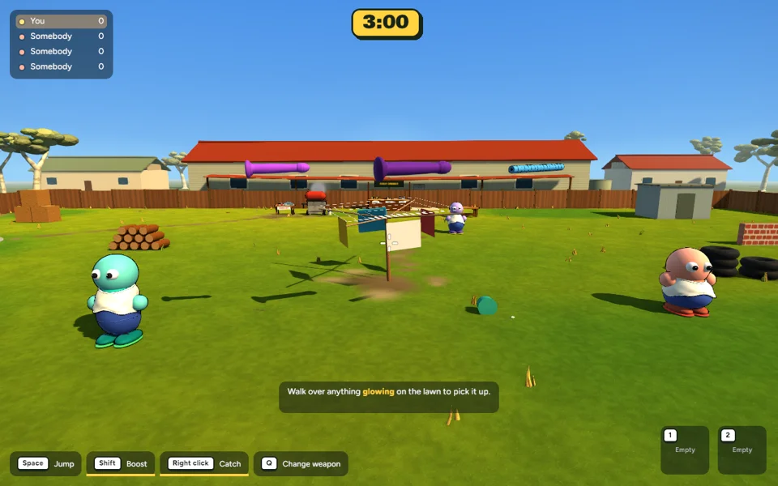

Implemented game captures · Completed 15 October 2026 · Ready for review, uncommitted.
A continuous rounded surface replaces the shiny segmented model. Softer satin highlights, subtle molded textures and a rounded base make the material read as silicone. The grip stays firm while the shaft and tip bend progressively, with a slight delay toward the tip.


Actual first-person frames with controlled inputs: idle 0–0.5s, walk 0.5–1.5s, run and turn 1.5–3s, stop and settle 3–5s. The camera stays in one location; this is staged input playback, not a human playtest. Each clip contains 75 game frames at 15 fps.



Classic and jumbo silicone models settle alongside the unchanged noodle. The new surface follows the existing collision and settling rules.

593 tests passed, one existing ignored test. Release build passed. New checks cover mesh geometry and joint weights, mesh cost, the firm grip and stable spring settling at 30/60/120 Hz. Actual captures were inspected for held deformation, visibility and ground contact.
| 11-bot scene | Before | After |
|---|---|---|
| Mean frame time | 7.825 ms | 7.903 ms |
| Mean FPS | 127.79 | 126.53 |
| P95 frame time | 8.979 ms | 8.812 ms |
| Frames over 16.67 ms | 0 / 600 | 0 / 600 |
| Mesh entities | 7737 | 7389 |
Matching runs on this Mac at 1280×800, fixed 60 Hz simulation, 300 warmup frames then 600 wall-clock intervals. No image encoding or builds during measurement. A 1% mean difference is within the variability of these short samples; no meaningful regression established.
The six Blender-built surfaces each have 2736 vertices and 5424 triangles, reused across matching items. Seven animated joints deform the surface on the GPU. This is a lightweight animation approximation, not full silicone or soft-body simulation. Live multiplayer and subjective feel still need playtesting.